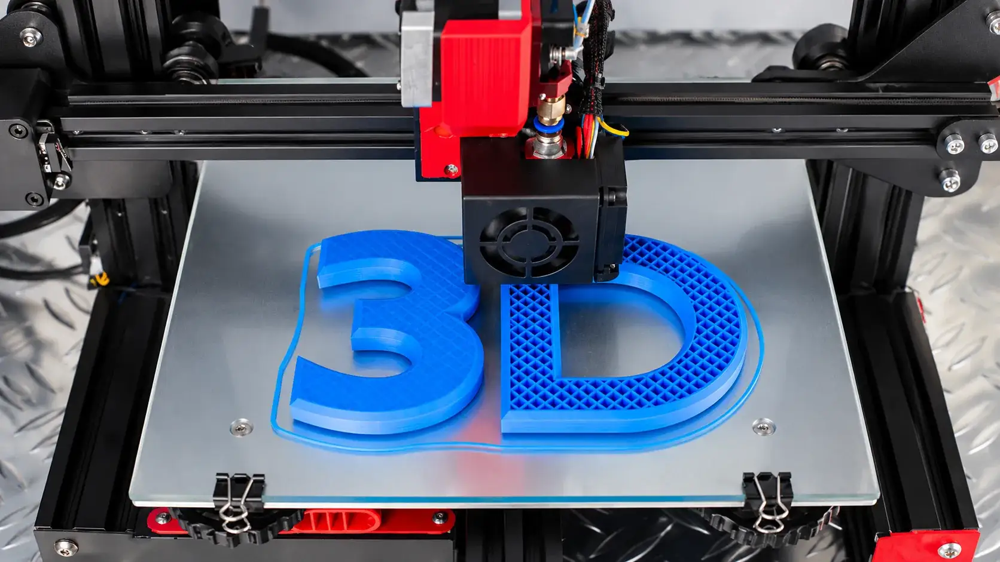

Controle de custos
Considere material, energia, tempo de máquina e perdas para estimar o custo de cada impressão.
Tenha mais clareza sobre os custos de produção, organize seus orçamentos e prepare sua operação para crescer com o VyxelCore.

Conheça algumas das áreas que o VyxelCore pretende ajudar a organizar em uma operação de impressão 3D.
Considere material, energia, tempo de máquina e perdas para estimar o custo de cada impressão.
Estruture as informações dos filamentos e acompanhe os valores usados nos seus cálculos.
Use estimativas de produção para apoiar a formação de preços e a preparação de propostas comerciais.
Registre o material, o peso utilizado e o tempo estimado de impressão.
Calcule uma estimativa de custo de produção e avalie os fatores que influenciam o preço.
Use os resultados para apoiar seus orçamentos e melhorar o planejamento da produção.
Faça uma simulação e descubra como os dados podem ajudar no planejamento da sua operação.
Simular um orçamento